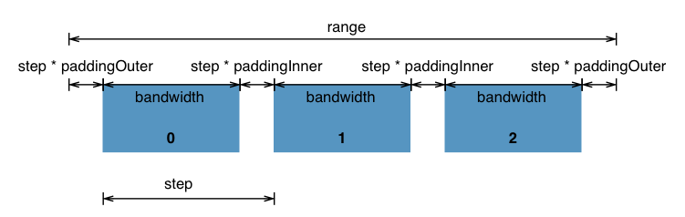

D3 序數比例尺 scaleBand
D3 的坐標不是只有數字，有時後也會用到除了數字以外的非連續性坐標
這時後就有了 scaleBand 序數比例尺
在這部份 v3 跟 v4 的版本寫了 有蠻大的落差
而我是從 v5 才開始真正的接觸到 d3 所以還是有小小踩到了一下 v3 轉 v5 時寫法差異的雷
在 scaleBand 裡有了這些控制圖表寬度的 api
直接看圖 來了解他的 api 分佈與用法

再來看看 v3 跟 v4 版本寫法的差異 ( 因為沒寫過 v3 版本 若有錯誤再請指正)
- v4
.scaleBand取代了 v3.scale.ordinal - v4
padding,paddingInner和paddingOuter取代 v3ordinal.rangeBands - v4
bandwidth和step取代 v3ordinal.rangeBand。
寫法大致如下
1 | // x軸坐標比例 |
| 參數 | 說明 |
|---|---|
| padding | paddingInner 與 paddingOuter 兩個相加的值 |
| paddingInner | 表示內部兩個分段之間的間隔比例，預設值 0 |
| paddingOuter | 表示第一個分段與最後一個分段之後的間隔比別，預設值 0 |
| align (v4 新增功能 ) | 可以用來控制對齊方式 置左 0, 置中 0.5, 置右 1 |
| round | 表示啟用或關閉 取整數操作，這個在輸出域為連續值的情況下都會有 |
當然 這幾個參數不是必需的，沒有定義也可以
而這一系列的參數，回傳的是一個比例尺函數
這時後只要執行該比例尺函數，傳入某個離散數據，便可以回傳值域中對應具體的值
這比例尺函數上還有兩個比較重要的方法，分別是 bandwidth 與 step
bandwidth 每個分段的寬度step 相鄰兩個分段之前的距離
可參照一開始上面的圖 比較易懂
參考資料：
https://github.com/d3/d3-scale#band-scales
D3.js 4.x API 中文手册 序数比例尺
d3.scaleBand
https://github.com/d3/d3/wiki/%E5%BA%8F%E6%95%B0%E6%AF%94%E4%BE%8B%E5%B0%BA
Donate
如果這整篇文章有幫助到你的話 也歡迎請我喝杯飲料 ^_^